Turn Screen Time Into Brain Time
Funfanti transforms short phone interaction moments into engaging 10-15 second learning opportunities. Fun and facts delivered when you need them.
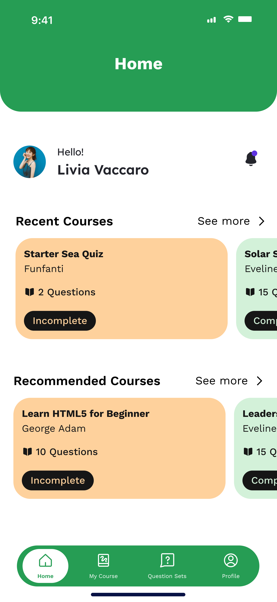
You unlock your phone 80+ times a day.
Are you getting anything out of it?
Wasted Micro-Moments
We unlock our phones endlessly, but these tiny pockets of time are wasted on mindless habits instead of growth.
Learning Feels Heavy
Most apps demand extensive focus, time, and effort, making them absolutely unsuitable for quick, casual usage.
Low Retention
We consume a massive amount of information daily, but without reinforcement, we forget almost all of it immediately.
No Personal Flow
Existing platforms are either too generic or lack the customization needed to seamlessly fit your daily context.
People don't lack time — they lack the right format to learn in small moments.
Effortless Micro-Learning
Funfanti turns short phone
interactions into opportunities for gaining knowledge, self-reminders, and light entertainment.
Learn new things in 10-15 second bursts without interrupting your day.
Seamless Pop-ups
10-15 second multiple-choice pop-ups leverage brief moments of screen interaction, making learning enjoyable and extremely fast.
Total Customization
You decide exactly what and how questions appear. A flexible mechanism tailored entirely to your personal habits.
Topic Library & Quizzes
Explore expertly pre-made topic sets to study, or create your very own tailored content for personal reminders and deep-dive sessions.
Powerful Retention
Reinforce your memory naturally in an everyday context. Turn wasted scrolling into a persistent, healthy habit.
The 15-Second Pop-Up
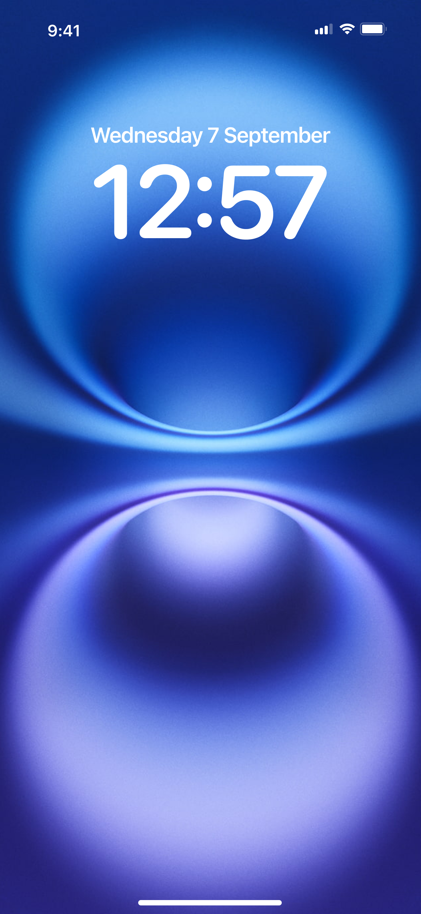
Instant notification appears on screen
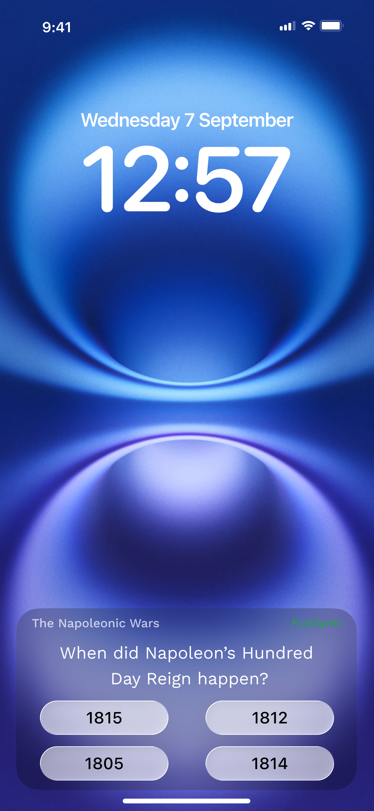
Answer within the 15-second time limit
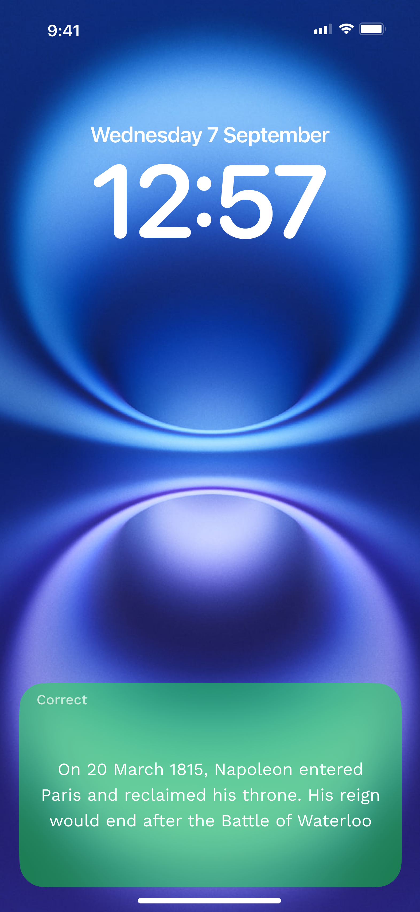
Immediate celebratory feedback with learning explanation.
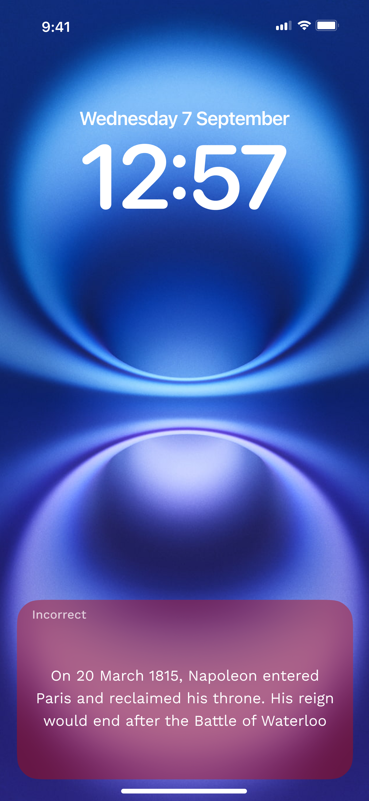
Highlights the correct choice and guides to better retention.
Focused Study Sessions
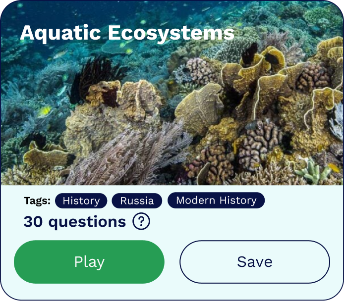
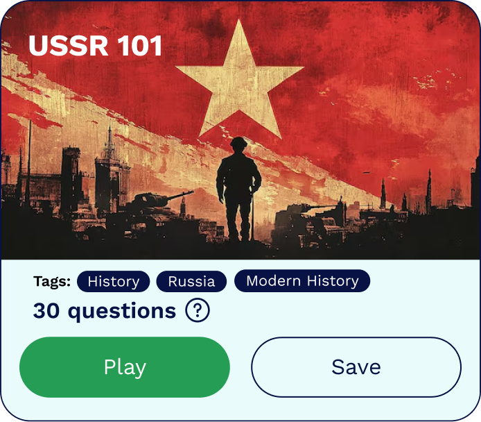
Browse through extensive pre-made knowledge sets or custom libraries.
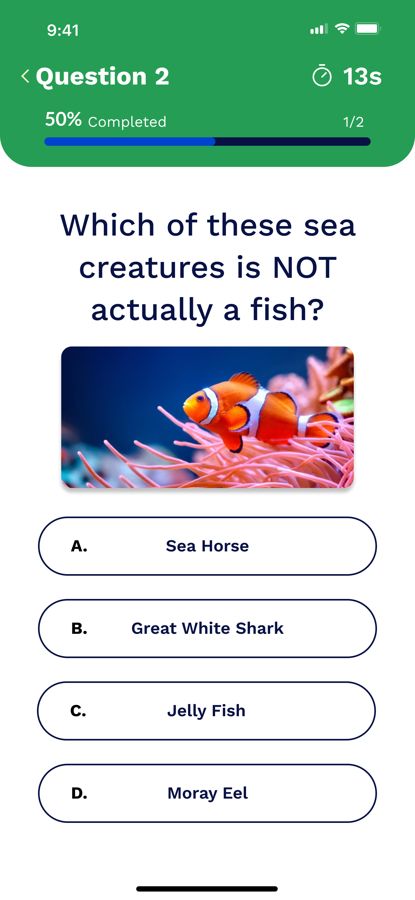
Immerse yourself in focused, full-screen multiple option quizzes.
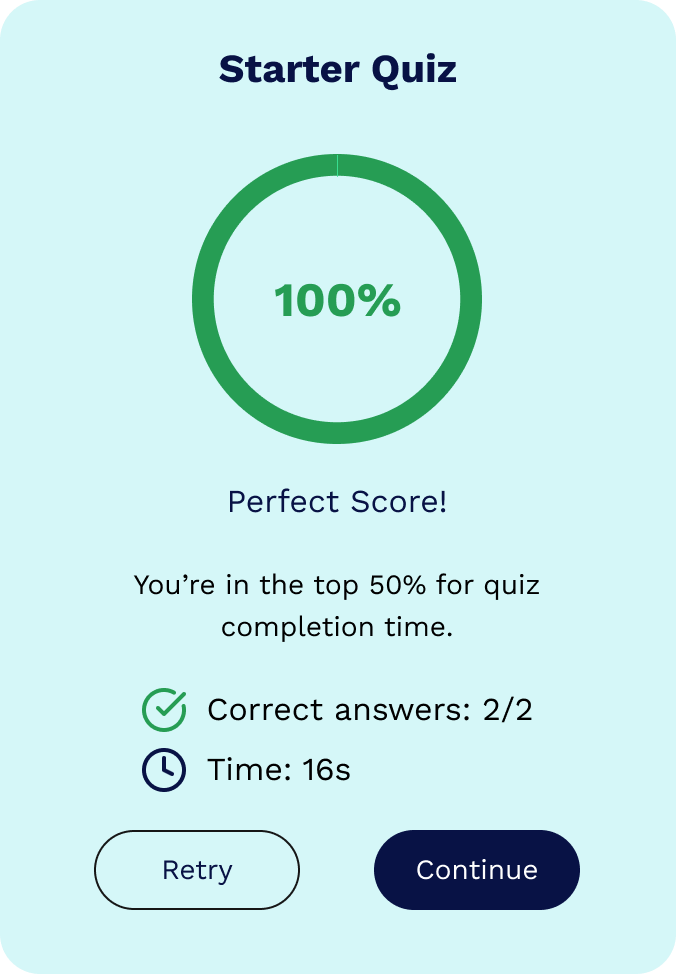
Analyze your score immediately to track your progress.
The Gateway to Knowledge
Most learning apps bombard you with a maze of menus before you even answer your first question. With Funfanti, your personalized learning environment is immediately at your fingertips.
Our beautifully crafted Home Dashboard surfaces your favorite subjects, ongoing topic sets, and expertly curated recommendations instantly. The experience is designed to be frictionless—because when you only have 15 seconds to learn something new, every single second counts.
Pinpoint Exactly What Matters
Learning shouldn't be a one-size-fits-all experience. Whether you want to brush up on World War II geography, memorize medical terms, or just explore fun anime trivia, finding the perfect content has to be effortless.
Funfanti’s advanced search and filter options allow you to narrow down thousands of pre-made topics by category, difficulty, or length. You are in total control of what knowledge occupies your mind.
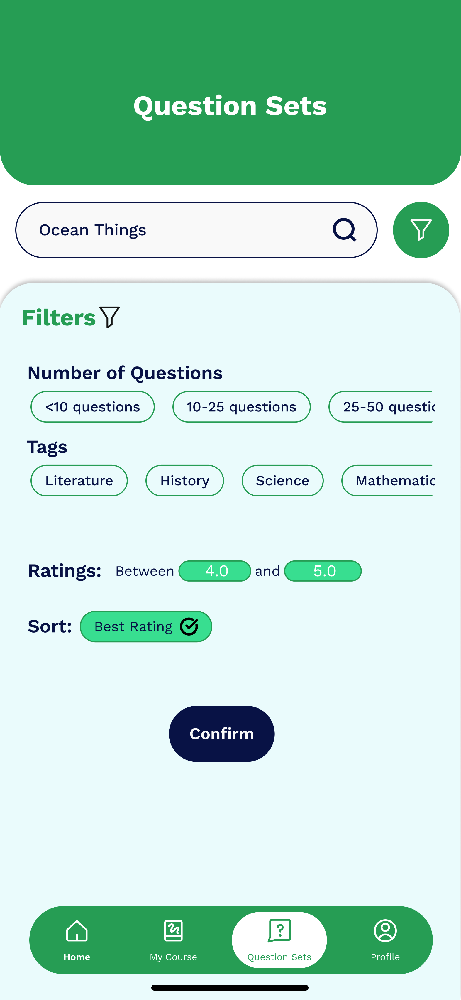
Inspect Before You Invest
Time is your most valuable asset, and we never want you to waste it. Before you dive into a dedicated study session, Funfanti provides incredibly detailed preview screens.
At a glance, you can review the total number of questions, read a brief overview of what you'll learn, and assess the difficulty level. No surprises, no wasted clicks—just crystal clear expectations.
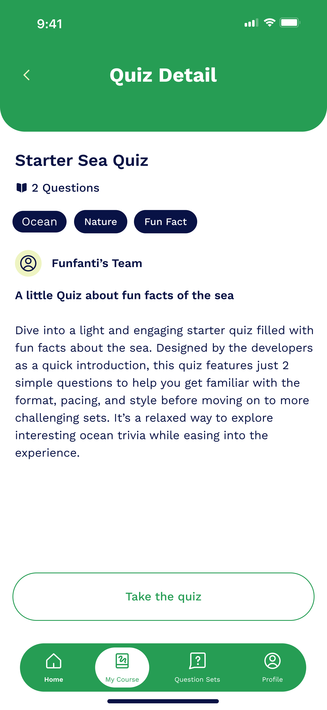
Your Personal Knowledge Vault
Not every topic is meant to be played just once. When you find a question set that challenges you or contains vital information you need to retain, a single tap saves it directly to 'My Quizzes'.
This is your personalized learning library. Easily bookmark your favorite subjects, revisit difficult trivia, and curate an accessible archive of the knowledge that matters most to you. Build your perfect collection and turn your lock screen into a relentless engine for continuous retention.
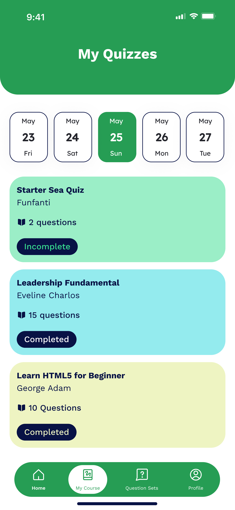
Stop Scrolling.
Start Learning.
Ready to transform your everyday phone habits into moments of continuous growth? Stop scrolling endlessly and join the Funfanti experience today.